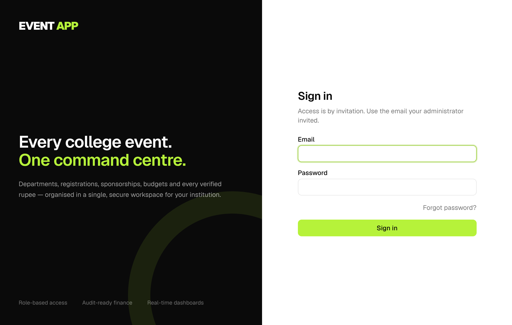

How to run a college fest on EVENT APP, from inviting your team to closing the books. Written for Super Admins, College Admins, Event Admins, department heads, volunteers and judges.
App: https://event-app-blush.vercel.appWorks on: Windows · Mac · Android · iPhone · iPad (browser or installed app)Version: October 2026
Contents
What's inside
Quick startThe first hour, step by step
Signing in & your accountInvitations, passwords, two-step, install, alerts
Roles & permissionsWho can see and do what
For the Super AdminUsers, access, activity, global reports
EVENT APP keeps everything about a fest in one place. A college runs one or more events; each event has departments; people are given roles inside them. Here is the shortest path from an empty app to a working event.
Super Admin→College→Event→Departments→Team→Participants
The first hour
Create the college.Colleges → New college. Give it a name and a short code such as CET; the code becomes part of public links.
Appoint a College Admin (optional). Open the college and invite the staff member who manages its events.
Create the event.Events → New event: pick the college, name, dates and venue. The app creates 18 departments and 10 sponsorship packages for you.
Appoint department heads.Event → Departments → (department) → Assign person, position Head.
Add competitions under Event → Registrations, with fees and team sizes.
Turn on the public registration page in Event → Settings → Registration settings and share the link.
Set the budget in Event → Finance → Budget and give each department its allocation.
TipNext year, use Event → Settings → Copy as new event. It copies departments, packages, competitions, schedule, task checklist and budget split with the dates moved forward.
Finding your way around
Left menu, top part: things across the whole app: Overview, Colleges, Events, Reports, Users, Activity & audit, Settings. You only see what your role allows.
Left menu, event part: once you open an event, its modules appear: Departments, Team, Registrations, Check-in, Finance, Sponsorship, Judging, Certificates, Tasks, Duty roster, and more.
Top bar: search, the event switcher, the notification bell, the light/dark switch and your account menu (Profile, Install app, Sign out).
Chapter 2
Signing in & your account
EVENT APP is invitation-only. Nobody can sign up on their own; an administrator invites them by email.

The sign-in screen. “Forgot password?” sends a reset link to the invited address.
Accepting an invitation
Open the email titled “You're invited to EVENT APP” (check spam).
Click Accept invitation. The app opens and asks you to choose a password: at least 10 characters with letters and numbers.
You're signed in. Your home page lists the events and roles you've been given.
Good to knowAfter you set or change a password, Supabase (the app's sign-in service) emails a short “your password was changed” notice. It has no link and needs no action.
Forgot your password
On the sign-in page, click Forgot password? and enter the email your invitation was sent to.
Open “Reset your EVENT APP password” and click Reset password. The link expires in an hour.
Choose a new password. If no email arrives, the address probably isn't the one you were invited with; ask your administrator to send a reset from the Users page.
Your profile
Account menu → Profile holds:
Your details and photo: name, phone, job title.
Notifications on this device: phone or desktop alerts. On iPhone/iPad, install the app first (below), open it from the Home Screen, then turn notifications on.
Two-step sign-in: scan the QR code with Google Authenticator, Microsoft Authenticator or Authy, then type the 6-digit code. From then on you'll enter a code after your password. Strongly recommended for admins and finance roles.
Calendar sync: one click gives a private link to add to Google, Apple or Outlook Calendar. Your events, schedule, task deadlines and duties appear there. Reset the link if it's ever shared by mistake.
Change password.
Install the app
Device
How
Windows / Mac with Chrome or Edge
Install icon in the address bar, or Account menu → Install app
Mac with Safari
File → Add to Dock
Android
Account menu → Install app, or the browser menu → Install app
iPhone / iPad
Open in Safari → Share button → Add to Home Screen
The installed app updates itself whenever the app is improved. It needs an internet connection; without one it shows an offline page.
Chapter 3
Roles & permissions
What you can see depends on your role. If a module is missing from your menu, you don't have the permission for it; that's by design, not a bug.
Role
Can do
Super Admin (one person)
Everything, in every college. Manages all users and their access, sees all activity, runs global reports. Shown to others as “Contact Admin”. This role can't be given to anyone else.
College Admin
Everything inside their college: creates events, appoints Event Admins, manages college users, college reports, deletes events without money records.
Their department: team, tasks, expense requests, budget requests, announcements, duty roster for the department.
Team member
Their department, their tasks and duties. Members of the Registration department can use gate check-in.
Event viewer
Read-only view of the event. Use it for outside judges.
Changing what a role can do
The Super Admin can adjust permissions per role in Settings → Permissions. Changes apply to everyone with that role straight away.
How department roles workA department role only works inside its own department. A Media Head can manage Media's tasks and expenses, but not Finance's.
Giving someone access
College Admin:Colleges → (college) → Add admin, or Users → (person) → College access.
Event role:Event → Team → Add person, or Event → Settings → Appoint event admin.
Department position:Event → Departments → (department) → Assign person.
In each dialog choose Existing user to pick someone who already has an account, or New person (email) to invite someone new.
Taking access away
Remove next to a person ends that one role.
Replace next to an admin hands the admin job to someone else in one step.
Remove all access on Users → (person) ends every role they hold, everywhere. Super Admin only.
Department access
People placed in a department can open only that department, even if they are also an Event Admin. College Admins and the Super Admin control the exceptions in Event → Department access:
All departments switch: for organisers (for example the core committee) who need the whole event. Their Event Admin powers apply again.
Give access to specific departments: View to see it, Manage to work in it like its head. For example, give the Media head Manage access to Marketing.
Head roles keep their event-wide area: the Finance head sees finance for every department, the Registration head sees registrations, and so on.
Event Admins cannot change department access.
Chapter 4
For the Super Admin
Users
Users lists everyone. Badges show Invite pending (not accepted yet) and 2-step (two-step sign-in on). The ⋯ menu on each row offers:
Resend invitation, for people who lost or never got the email.
Send password reset, which emails a reset link to their exact account address.
Click a name on the Users page to open their access page:
College access: make College Admin, or remove.
Event roles: add or remove event-wide roles.
Department assignments: assign as head, assistant head or member of any department, or remove.
Remove from an event completely: ends every role there and unassigns their open tasks.
Remove all access: ends every college, event and department role they hold, everywhere. Their account and history stay, so you can give them a new, separate role afterwards.
Access history: every past assignment.
Replacing an administrator
To hand an admin job to someone else in one step:
Go to the admin list: Colleges → (college) → administrators for a College Admin, or Event → Settings → Event administrators for an Event Admin.
Click Replace next to the current admin.
Enter the new person's name and email. An existing user is found automatically; a new person gets an invitation.
The new person becomes admin first, then the previous admin's admin access ends. Their history is kept.
To give the previous admin a different role, use their access page (above) or the Team and Departments pages.
Suspend, or delete and invite again
Suspend
Delete account
Users → (person) → Suspend. Blocks sign-in straight away. Roles and the account stay, and Reactivate undoes it.
Users → (person) → Delete account, then type their email. Ends every role, removes their login and frees the email address. Past records stay and show the old name marked “(deleted)”.
After deleting, invite the same email again from Users → Invite user. They arrive as a brand-new user, with only the role you give them now.
Cancelled & deleted by admins
Your Overview dashboard has a Cancelled & deleted by admins card. It lists every event and competition that another admin cancelled or deleted, with who did it, when and why, and a count.
Things you cancel or delete yourself are not listed.
Click Clear to empty the list and reset the count to zero. The Activity log still keeps the history.
Activity & audit
Activity & audit has two tabs:
Activity: what people did, in plain language, across every college and event.
Data changes: a permanent record of every record created, edited or deleted.
Both can be searched, filtered and exported.
Global reports
Reports runs any of the 12 reports across all colleges, one college, or one event. College Admins see their own colleges only.
Your privacy
Everyone else sees you as “Contact Admin”, with no name, email, phone or photo. Only you see your real details.
Chapter 5
Colleges & events
Create a college
Colleges → New college: name, short code, city and contact details. Upload a logo if you like.
Open the college to add College Admins, see its events and edit its details. Archive a college you no longer use; its records stay.
Create an event
Events → New event: college, name, web name (slug), category, dates, venue, registration window, contact details, currency.
Optionally invite the first Event Admin in the same form.
The event opens with 18 departments, 10 sponsorship packages and an empty budget, ready to fill.
Event settings
Event → Settings contains:
Event details: everything from the create form.
Lifecycle: the event status, plus Archive / Restore.
Branding: logo and banner, shown on the public page and tickets.
Registrations are refused when the event is Registration closed, Completed, Archived or Cancelled, or outside the registration window.
Cancelling an event
Event → Settings → Cancel event, then give a reason.
Registrations close at once and the public page says the event has been cancelled. Every record is kept.
Changed your mind? Click Restore event on the red banner at the top of Settings. The event returns to Planning.
Archive or delete?
Cancel
Archive
Delete
The event is called off. Registrations close, everything is kept, and it can be restored.
Hides the event from day-to-day lists and keeps everything for reports and audit. Can be restored.
Removes the event permanently. You must type its name to confirm. Not allowed once it has real registrations, payments or financial records; archive those instead.
Chapter 6
Departments & team
Every event starts with 18 departments: Finance, Media and PR, Marketing, Sponsorship, Registration, Technical, Logistics, Stage and Production, Hospitality, Transportation, Accommodation, Food and Catering, Security, Creative and Design, Documentation, Volunteer Management, Guest Management and Public Relations.
Managing departments
Add:Event → Departments → New department.
Edit or archive: open the department → Edit.
Delete: open the department → Delete, then type its name. Its tasks move to the event level. A department with a budget or expense records can only be archived.
The department workspace
Each department page shows:
progress, team size, pending, completed and overdue tasks;
the budget and spending;
expense requests;
department announcements;
recent activity.
Appointing people
Open the department and click Assign person.
Choose Existing user and pick a name, or New person (email) to invite someone.
Pick the position: Head, Co-head, Assistant head or Member. The role is chosen automatically for the department, or you can pick one.
The person is notified. Removing someone keeps their history.
Co-heads lead alongside the head and get the same powers. A department has one head but can have several co-heads. The Super Admin, College Admins and Event Admins can add them.
Remove revokes a role and keeps it in the history. The Super Admin also sees Delete, which erases the role assignment completely, here and on Users → (person).
The Team page
Event → Team lists everyone in the event with their event roles and departments. Add person gives someone an event-wide role (for example Event Admin or Viewer). The list can be exported.
Chapter 7
Registrations
1. Set up competitions
In Event → Registrations, add each competition with:
a short code;
the fee (0 for free);
Individual or Team, with minimum and maximum team size;
an optional capacity, start time, venue and rules link.
Each competition card also has Cancel (closes it and hides it from the public page; registrations stay, and Restore reopens it) and Delete (only for competitions nobody has registered for).
2. Open the public registration page
Event → Settings → Registration settings → switch on Public registration page → Save.
Copy the link under the switch. It looks like event-app-blush.vercel.app/e/college-code/event-name.
Share it on posters, WhatsApp and Instagram. Participants register without an account.
3. Tickets
After registering, each participant sees their QR ticket and gets it by email.
Free registrations are confirmed instantly.
Paid registrations show “Payment pending: pay at the registration desk” until staff record the payment.
Anyone can reopen their ticket from the email link. Organisers can reopen or re-email it from Registrations → (registration) → Ticket & check-in.
4. The registration desk
Add offline registration: for walk-ins.
Record payment: cash or UPI collected at the desk. The registration becomes Confirmed and the money appears in Finance.
Confirm, Waitlist, Cancel registration: change status, with a reason.
Record refund: money given back; it is recorded in the ledger.
Delete participant (Super Admin only): open the registration, click Delete participant and type its registration number. This removes it permanently, with its ticket, scores, results and certificates. Participants whose payments are already in the finance ledger can't be deleted; cancel the registration and record a refund instead.
5. Website integration (optional)
If the college has its own website, Event → Integrations creates API keys so the website can send registrations in. Use Test keys first, then live keys. Online payment (Razorpay) is built in but currently switched off.
TipDuplicate rules, such as one registration per email per category, are in Registration settings. They stop the same person registering twice by mistake.
Chapter 8
Event day
Gate check-in
Who can use it: Event Admins, the Registration Head, and members of the Registration department.
On a phone, open the app in Chrome (Android) or Safari (iPhone), not inside WhatsApp or Gmail. Go to Event → Check-in.
Tap Start camera and allow camera access. Point it at the participant's ticket QR.
If the live camera won't start, use Scan with a photo: take a picture of the QR with the phone's camera app. You can also type the code printed under the QR.
Result
Meaning / what to do
✅ Checked in. Welcome!
Let them in.
⚠️ Already checked in
This ticket was used before; the time is shown. Check ID.
⚠️ Not confirmed: payment pending
Send them to the desk to pay, then scan again.
⛔ Registration cancelled
Not valid for entry.
⛔ Ticket not found for this event
Wrong event or a fake ticket.
The counters at the top update live. A mistaken check-in can be undone from the registration's page.
Duty roster
Event → Duty roster → New shift: duty name, place, department, start and end, people needed, notes.
On the shift card, Add a person → Assign. They're notified. The app refuses double-booking someone for overlapping shifts.
Volunteers see My duties and tap I'm here from 30 minutes before their shift.
Leads mark people ✓ present or ✗ absent. The page counts unfilled spots, present and no-shows.
Schedule and operations
Event → Schedule: the master timeline of the event days.
Event → Operations: venues, vendors, inventory and emergency contacts.
Chapter 9
Finance
Finance has four tabs: Overview, Ledger, Expenses and Budget. Money records can't be edited or deleted; mistakes are corrected with a reversal, so the books always add up.
Budget
Finance → Budget: set the total event budget.
Allocate an amount to each department.
Departments get alerts at 75%, 90% and 100% of their allocation.
Departments can request more through a budget revision; finance approves or rejects it.
Income
Registration income is recorded automatically when desk or online payments are confirmed.
Sponsorship income is recorded when a sponsor payment is verified.
Anything else (donations, stall rent): Record income.
A department head raises a request from their department page: Request. They fill in the title, category, amount, vendor and justification, attach the invoice, then Submit for review.
Finance clicks Start review, then:
Approve, optionally for a smaller amount;
Send back for changes;
Forward to a higher approver;
Reject.
Requests above the event's approval limit must be approved at the higher level.
When paid, use Record payment. This creates the expense entry in the ledger and updates the department's spending.
Ledger
Every money movement has a number (TXN-…), date, category, method and reference. Finance can:
Verify or Reject entries that are waiting;
Reverse a verified entry with a reason.
How the totals are calculated
Figure
Calculation
Total income received
Registration + sponsorship + other income (verified only)
Expenditure paid
Verified expenses
Approved, unpaid
Approved minus already paid
Outstanding sponsorship
Agreed minus received, for confirmed deals
Net cash position
Income − refunds − expenditure paid
Chapter 10
Sponsorship
Pipeline stages
Lead identified→Contacted→Meeting scheduled→Proposal sent→Negotiation→Confirmed→Partially paid→Fully paid
Deals that don't work out are marked Rejected or Lost.
Packages: 10 are ready (Title, Powered by, Associate, Gold, Silver, Bronze, Media, Technical, Food, Custom). Edit their prices, benefits and slots.
Sponsors: add the company, contact person and owner from your team.
Deals: create a deal for a sponsor with a package, proposed and agreed amounts, and the expected payment date. Move it across the pipeline board as talks progress.
Payments: on the deal, Record payment with the date, method, reference and receipt. Finance Verifies it, which adds the income to the ledger and updates the amount received.
Deliverables: logos, stalls, mentions, each with an owner and due date. Mark them done; pending deliverables appear on the closing checklist.
Chapter 11
Tasks, media & marketing
Tasks
Three views: a board (drag between columns), a list, and a calendar. Filter to My tasks, a department, or all.
Each task has: a department, priority, start and due dates, location, assignees, subtasks, comments and attachments.
Statuses: Not started, In progress, Under review, Completed, On hold.
Reminders: assignees get due-soon and overdue reminders automatically, and a notification when they're assigned.
Media & PR
Track posters, videos, press releases and photos, with owners, due dates and approval status.
Marketing
Record campaigns per platform: budget, spend, reach, impressions, engagement and registrations generated. The Marketing report works out the cost per registration.
Chapter 12
Judging & results
Organisers set up judging; judges score on their phone or laptop; the app ranks entrants; organisers publish the winners.
Set up a competition (organisers)
Event → Judging → (competition) → Setup.
Add criteria, each with a maximum score and a weight. Example: Content out of 10, weight 2; Presentation out of 10, weight 1.
Add judges. Outside judges must first be added to the event, for example as Viewer, under Team → Add person.
Save setup. Judges are notified.
Scoring (judges)
Event → Judging shows only the competitions you judge.
Pick an entrant, enter a score for each criterion (and a comment if you like), then Save scores. Scores can be changed until results are published.
Only confirmed registrations appear as entrants.
Leaderboard and publishing (organisers)
The Leaderboard ranks entrants by the weighted average of all judges, as a percentage. It also shows how many judges have scored each entrant.
Choose awards (Winner, Runner-up, Second runner-up, Special mention…) and click Publish results.
Publishing locks the scores, shows the results on the public event page, and makes winner certificates available.
Unpublish results reopens scoring if a correction is needed.
Chapter 13
Certificates
Event → Certificates → Certificate details: enter up to two signatories (name and title) and an optional footer line, e.g. “Organised by the Student Council”.
Issue participation certificates. With “Only people who checked in” ticked, only attendees get one. Every team member gets their own.
Issue winner certificates after results are published.
Email unsent certificates sends download links, up to 80 per click (Gmail allows about 500 emails a day).
Each certificate is a landscape PDF with a QR code. Scanning it opens a verification page that shows whether the certificate is genuine. If a certificate was issued by mistake, Revoke it: the verification page then says “revoked”. Restore undoes this.
TipIssuing again is safe. People who already have a certificate are skipped automatically.
Chapter 14
Communication
Announcements
Everyone (Super Admin), a college, an event (Event → Announcements) or a department (on its page).
Set the priority (normal, important, urgent) and pin important ones. Everyone in the audience gets a notification.
Notifications
The bell shows new notifications, and Notifications lists them all.
Turn on push notifications in your Profile to get them on your phone or computer.
You're notified about assignments, approvals, duties, announcements, new registrations, judging and reminders.
Documents
Upload agreements, invoices, receipts and plans to Event → Documents, or attach them to expenses, deals and tasks.
Files are private and open through secure, expiring links. Choose who can see each one:
Event: everyone in the event;
Department: that department only;
Finance: finance roles;
Restricted: event managers.
Archive documents you no longer need.
Chapter 15
Feedback surveys
Event → Feedback → New survey. It starts from a template: overall rating (1–5), “How likely are you to recommend…” (0–10), what you liked, and what to improve. Edit, reorder or add questions (rating, 0–10, multiple choice, written answer).
Choose who answers:
Participants: each person gets a personal emailed link and can answer only once.
Anyone with the link: share one link anywhere.
Set the status to Open and save. For participant surveys, click Email participants who haven't been invited, up to 80 per click.
Watch the Results: averages, bar charts, the recommendation score (promoters minus detractors) and written answers. Close the survey when done.
The latest survey's score also appears on the event closing page.
Chapter 16
Reports & exports
Event → Reports for one event; Reports in the main menu for several events or colleges (Super Admin and College Admins).
Requests with requested, approved and paid amounts
Budget utilization
Allocated vs approved vs paid, per department
Sponsorship
Deals by stage, agreed, received, outstanding
Department performance
Team, tasks, overdue work, budget use
Tasks
Status, due dates, on time or late
Marketing
Spend, reach, engagement, cost per registration
Participants
Contact details, college, team, competitions
Event closing
Final settlement and closing status
Filter by date, department, category and status. With the “Export reports” permission you can download CSV, Excel or PDF. Each report shows what your role may see; a department head sees only their department.
Chapter 17
Closing an event
Set the event status to Completed. You can do this from the closing page with Mark event completed.
Open Event → Closing. The checklist shows:
Red items, which block closing: unverified transactions, open expense requests, unverified sponsor payments.
Amber items, which are warnings: unpaid approved expenses, unpaid registrations, unfinished tasks, pending sponsor deliverables.
Review the final figures, department performance and feedback score. Export the final reports for your records.
Click Close finances and write who reviewed the figures. The figures are frozen, and no new money entries can be added.
Archive event when you're done. It stays available for reports and audit.
Need to fix something after closing?Only the Super Admin can Reopen finances, with a reason. The reason is added to the closing note and the audit log.
Chapter 18
Troubleshooting & FAQ
I didn't get an invitation or reset email.
Check spam and promotions. Make sure it's the address you were invited with. The Super Admin can use Users → ⋯ → Resend invitation or Send password reset.
I got “your password was changed” with no link.
That's an automatic security notice after you set or change a password. Nothing to do.
A menu item is missing.
Your role doesn't include it. Ask an admin to change your role, or the Super Admin to adjust the permission matrix.
The camera doesn't start on the check-in page.
Open the app directly in Chrome or Safari, not inside WhatsApp or Gmail. Allow the camera in the site settings (the lock icon next to the address), or use Scan with a photo, or type the code.
A participant registered twice.
Cancel one registration with a reason. Tighten the duplicate rule in Registration settings.
An expense was paid twice or recorded wrongly.
Ledger entries can't be edited. Finance uses Reverse on the wrong entry, then records the correct one.
I can't delete an event or department.
It has registrations, payments or money records, which must be kept. Archive it instead.
Push notifications don't arrive on iPhone.
Install the app to the Home Screen, open it from there, then turn notifications on in Profile. iOS 16.4 or later is needed.
Ticket or certificate emails aren't sending.
The app sends through the Gmail account set up in Vercel. If Gmail's daily limit (about 500 emails) is reached, try the next day. The links can also be shared directly.
I lost my phone with two-step sign-in.
Ask the Super Admin to help reset your account access.
Chapter 19
Quick reference
Links
What
Address
The app
https://event-app-blush.vercel.app
Public event page
/e/<college code>/<event web name>
Ticket
/t/<ticket code>
Certificate check
/c/<certificate number>
Survey
/s/<survey link>
Registration statuses
Pending (waiting for payment or confirmation) · Confirmed · Waitlisted · Cancelled.